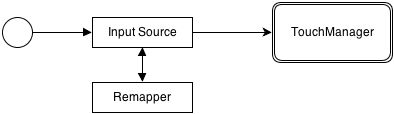
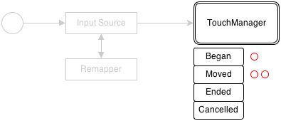
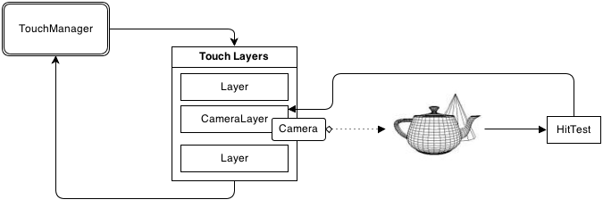
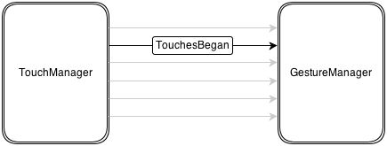
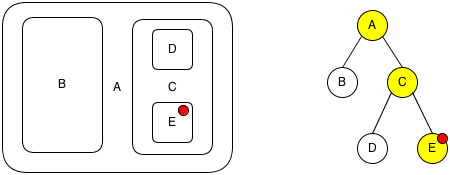
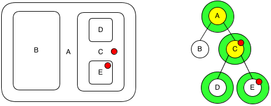

A deep explanation of how TouchScript works.
TouchScript consists of several projects which all compile into separate DLLs. Originally DLLs were chosen in the days of Unity 3.5 which didn't support namespaces. But now it's just easier to separate functionality so different DLLs could be used where appropriate.
TuioInput because it relies on sockets.NOTE: if you want to build the library manually please note the following:
Copy UnityEngine.dll and UnityEditor.dll to Lib folder since the framework links to it.
They should be here: c:\Program Files (x86)\Unity\Editor\Data\Managed\.
Copy UnityEngine.dll and UnityEditor.dll to Lib folder.
They should be here: /Applications/Unity/Unity.app/Contents/Frameworks/Managed/.
If anyone knows a better way of doing this without hardcoding paths or setting system variables, please let me know.
This section describes how a touch originated at user's finger gets to a gesture.

First a touch comes to an Input Source. It doesn't matter what touch-enabled device is used, it might be mouse or a fake touch generating script. All input sources have CoordinatesRemapper property which may contain an instance of ICoordinatesRemapper. In this case all touch points go through it before getting to TouchManager.
Remappers are used when an input device isn't aligned to the screen correctly.
It might be necessary to rotate or scale data to match the screen.

Since many touch events can theoretically arrive between frames, TouchManager keeps them in buffers till the next Update. During the next Update all messages are processed and the following events are dispatched in the following order:
FrameStartedTouchesBeganTouchesMovedTouchesEndedTouchesCancelledFrameFinished

Before dispatching TouchesBegan TouchManager goes through all instances of TouchLayer in the scene to determine if one of them wants to take the touch.
The most used layer type is CameraLayer. It checks if a ray casted from camera's position hits any collider in the scene. If it does the system checks if there are any instances of HitTest attached to target object. They can intercept successful raycasts and modify them. For example Untouchable makes it impossible to touch an object.
Another layer type is ScaleformLayer. It transfers all touch points to ActionScript where Flash version of TouchScript gets them through ScaleformInput.
Layer which takes a touch sets its Layer and Target properties.

When Target is determined, touch point goes to GestureManager with TouchesBegan event. Gesturemanager checks if any gesture on the target or in its transform hierarchy is interested in this touch. This process is a bit tricky.

For example we have an interface shown on the image above with nested boxes. When user touches box E the system looks for all the gestures on boxes from the root object to the Target which are able to receive touch points (in this case boxes E, C and A). If there's no active gesture in the graph containing the Target all gestures get the touch until one of them changes its state to Recognized or Began.
So, let's assume that some gesture on box E got this touch point and started. It now owns this touch point and all other gestures in the graph which are not friendly to this gesture and returned true from CanBePreventedByGesture(gesture) will be forced to fail and reset.

Now user touches box C which is a parent container of box E. The system once again grabs all gestures on yellow boxes but checks them against all the gestures on green boxes. In this case a gesture on box E is active and prevents all gestures starting from C and up from beginning.
To make gestures in hierarchy work together we need to add one to another's Friendly gestures property in inspector or via AddFriendlyGesture(gesture) method. If gestures are friendly they can share owned touch points.
When TouchesMoved, TouchesEnded or TouchesCancelled events occur the process is much simpler since only gestures which own touch points from an event will be notified.
So, that's how a touch point goes all the way from an input device to gestures.
In TouchScript only gestures can receive touch events. The library comes with several prebuilt gestures which handle most of the cases but sometimes it's just easier to write a new one than try to combine them. This knowledge also is useful for better understanding how the library works.
Gestures can be one of the two types:
A gesture is a state machine. It can be in one of the following states:
Possible - gesture needs more information/time to either transition to Recognized or Failed,Began - when a continuous gesture starts it transitions to Began state,Changed - continuous gestures keep going to Changed state in a loop to update their values,Recognized - when recognized a discrete gesture transitions to Recognized state and resets,Ended - same as Recognized but for continuous gestures,Failed - gesture couldn't recognize a touch sequence,Cancelled - gesture was cancelled and should abort.All gestures inherit from Gesture class which provides several callbacks to override.
protected virtual void touchesBegan(IListtouches) {} protected virtual void touchesMoved(IList touches) {} protected virtual void touchesEnded(IList touches) {} protected virtual void touchesCancelled(IList touches) {} protected virtual void reset() {}
The first 4 callbacks are called by GestureManager when touch events occur associated with target gesture. reset is called after gesture transitioned to Recognized, Failed or Cancelled state which resets it to Possible again.
To change gesture's state in code you should call setState(GestureState value).
Please check out on GitHub how built-in gestures are implemented. For example TapGesture.